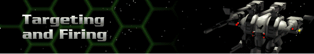

When you have your Herc in position to attack, position the cursor over the Cybrid or Cybrid facility you wish to target. Note the cursor change. Click once to reveal the color coded target display in the bottom left corner of the screen. The color code ranges from bright green (no damage) to dark red (destroyed or almost destroyed). A red “mesh” will appear over any obstructed portion of the target. The red pointer indicates your direction of fire. Above the color code is a list of weapons mounted to your selected Herc. Click on the weapon of choice to fire, or randomly fire by clicking on the targeted Cybrid or Cybrid facility.
Cybrids are programmed to automatically return fire, as are your Hercs when being fired upon. Remember to set your shields accordingly before attacking.
All of your weapons start with the maximum payload, which decreases with each turn. For instance, a 50mm Autocannon will start with a maximum payload of 18 rounds. During the first turn, two rounds are consumed and you begin the second turn with 16 rounds, and so on. The check box to the right of each firing button can be toggled on or off depending on whether you want to include that weapon in the return fire sequence.
If at any time you need to access the Firing display, click on the Fire button.